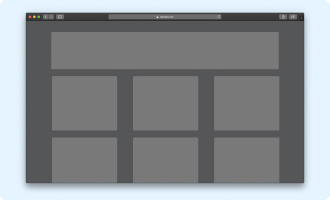

Not long ago i decided to improve the loading times of my website. it already loads pretty fast, but i knew
there was still room improvement and one of them was CSS loading. I will walk you trough the process and
show you how you can improve your load time as well.
To see how css affects the load time of a webpage, we first have to know how the browser converts an HTML
document into a functional webpage...
3 Min Read
Read Full

Front-end - 1 Month Ago
CSS Grid
The CSS Grid Layout Module offers a grid-bases layout system, with rows and columns, making it easier to design web pages without having to use floats and positioning
12 Min Read
Read Full
Front-end - 2 Month Ago
Colors in CSS
Colors play a vittal role in making a web page usable or not. In CSS, we can control the foreground and background color of an element with the color and background properties
8 Min Read
Read Full
Front-end - 2 Month Ago
CSS Variables
CSS variables are custom properties that cascade normally and even inherit. They start with a reserved --prefix, and there are no real rules about their value.